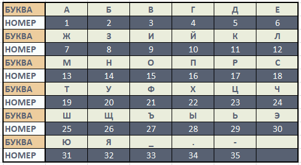

Задание №1.
С выполнением этого задания вам может помочь Шерлок Холмс.
Вам необходимо получить 4 буквы. На каждой табличке написано несколько функций с ограничениями. Вам необходимо их изобразить и вы получите букву.
Ссылки которые могут вам помочь:
- Построение графиков функций. Алгоритм построения и примеры
- Элементарные функции и их графики
- Преобразование графиков функций
- Как построить окружность
- Картинка: примеры записей дуг окружности
Следующая буква стоит в фразе на местах: 1, 7, 13, 28, 38, 46, 47, 64.

Следующая буква стоит в фразе на местах: 15, 17, 21, 30, 40, 48, 51, 60.

Следующая буква стоит в фразе на местах: 11, 26, 36, 53, 55.

Следующая буква стоит в фразе на местах: 9, 20, 22, 31, 50, 58, 63, 67, 70.

Задание №2.
Вам позвонили из банка, чтобы уточнить информацию по вашему вкладу и вы после звонка решили узнать, какой вклад (в фунтах стерлингов) у вас скопился в банке за T = 2 года, с процентной ставкой r = 8% и начальным капиталом P = 50 фунтов стерлингов
В поиске формулы для расчета вам помог раздел «Применение интеграла в области финансов» в методическом пособии,
находящемся по ссылке.
Дополнительная ссылка
Стоимость денег, чтобы сравнить вклад с современными деньгами.
Тире) -8.675; Ч) 108.437; О) 108.444; Н) 0.694
Эта буква (или символ) стоит в фразе на местах: 10, 66.
Задание №3.
Вот и закончилось расследование и вам теперь необходимо расшифровать всю фразу, используя найденный шифр и ключ. Информацию по шифру можете посмотреть, например, на этом сайте.
Для выполнения задания вы можете написать программу на известном вам языке программирования для дешифровки фразы. Или дешифровать вручную, попросив помощи у других участников веб-квеста.
